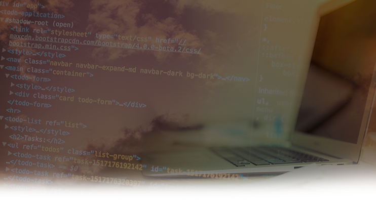

<!--
  Generated template for the SobreOEventoPage page.

  See http://ionicframework.com/docs/components/#navigation for more info on
  Ionic pages and navigation.
-->
<ion-header>

  <ion-navbar color="primary">
    <ion-title>Sobre o Evento</ion-title>
  </ion-navbar>

</ion-header>

<!-- Terminar de completar o mock dessa página e da de informações também, criar os json dentro da API -->

<ion-content>

  
  
  <div class="texto" margin-top padding>
    <h4 margin-bottom>{{_conteudo[0].header}}</h4>
    <h2>{{_conteudo[1].header}}</h2>
    <p *ngFor="let texto of textoParagrafos[1]">{{texto}}</p>

    <h2>{{_conteudo[2].header}}</h2>
    <p *ngFor="let texto of textoParagrafos[2]">{{texto}}</p>

    <h2>{{_conteudo[3].header}}</h2>
    <p *ngFor="let texto of textoParagrafos[3]">{{texto}}</p>
  </div>

</ion-content>